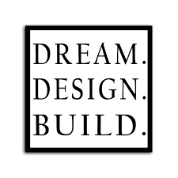
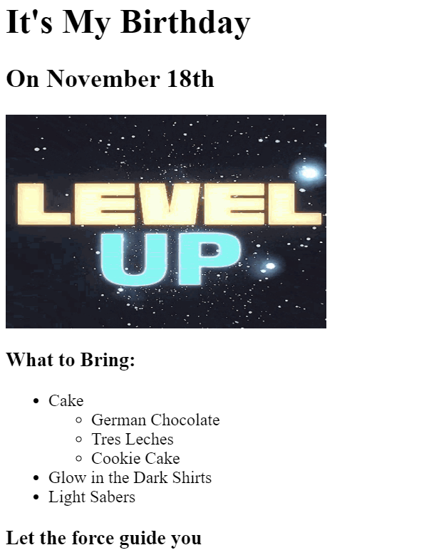
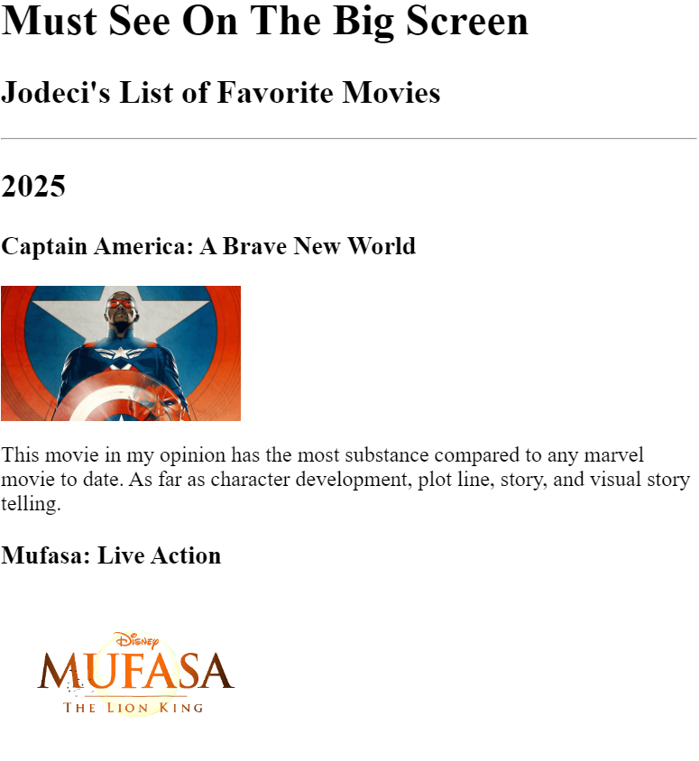

Below is an snippet of a Birthday Invitation. However, the design can be customized to your specific event. To see the full example of the Birthday Invitation that I made for my self, click the link.
Digital Birthday Invitation
This website utilizes a list to categorize movie titles and their discription by year. Each movie title has a corresponding image that provides a link to their respective IMb web pages.
In the following example I have provided my own descriptions, reminding me what I liked about each movie. Eventually each movie title listed will also have link that provides platforms to watch the movie.
